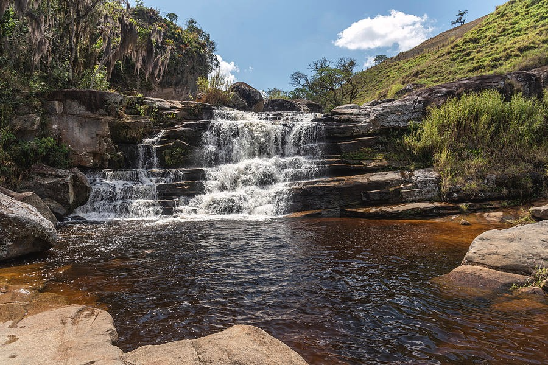
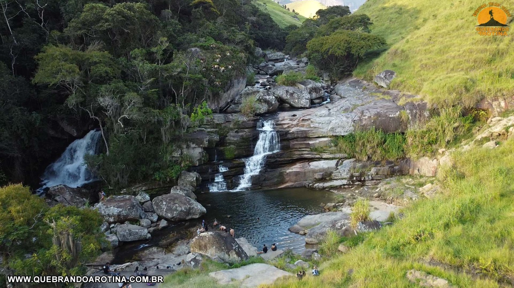
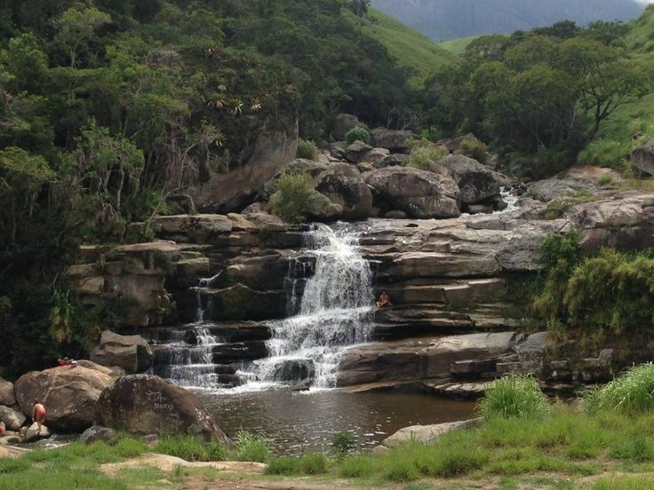
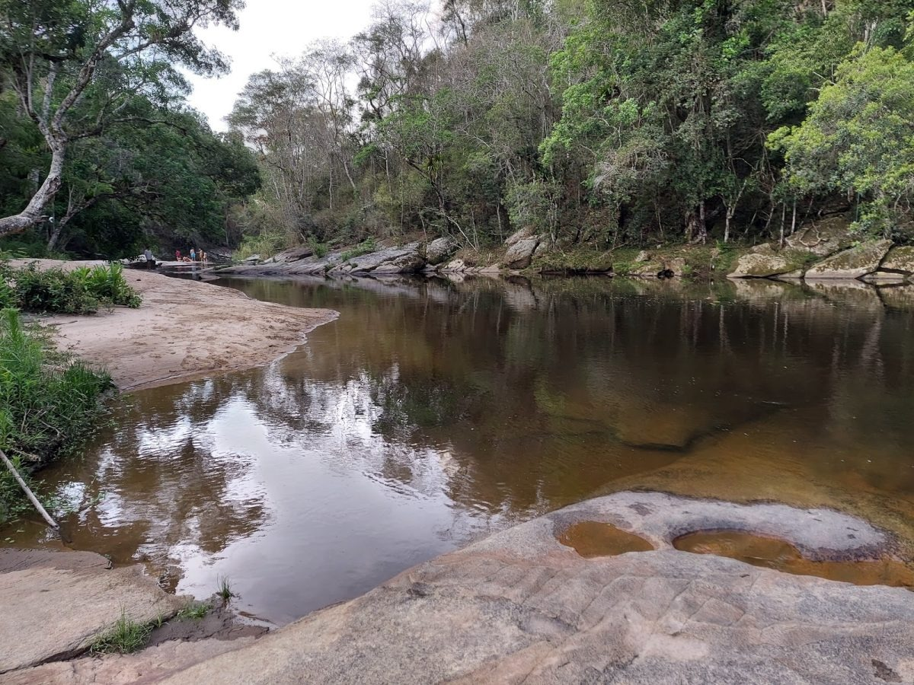
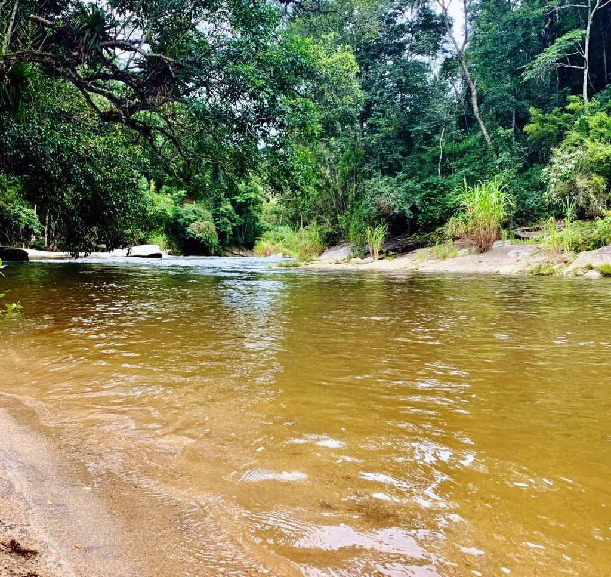
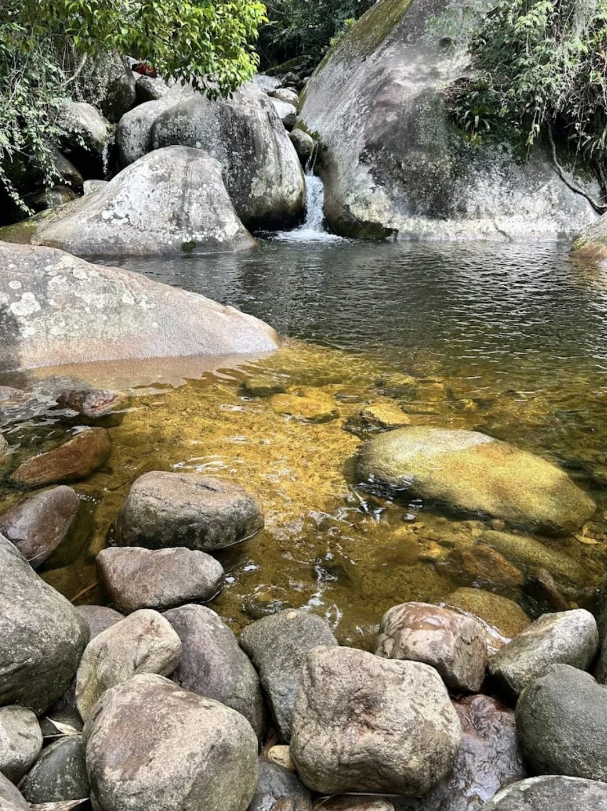
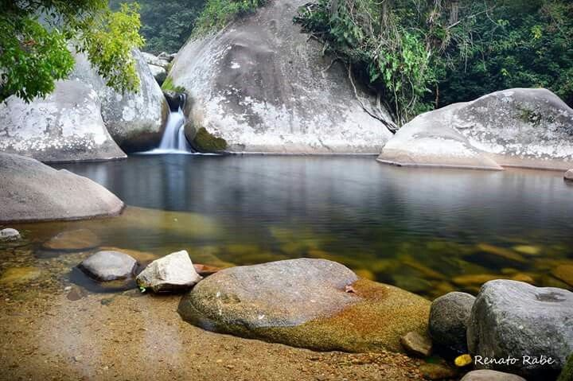
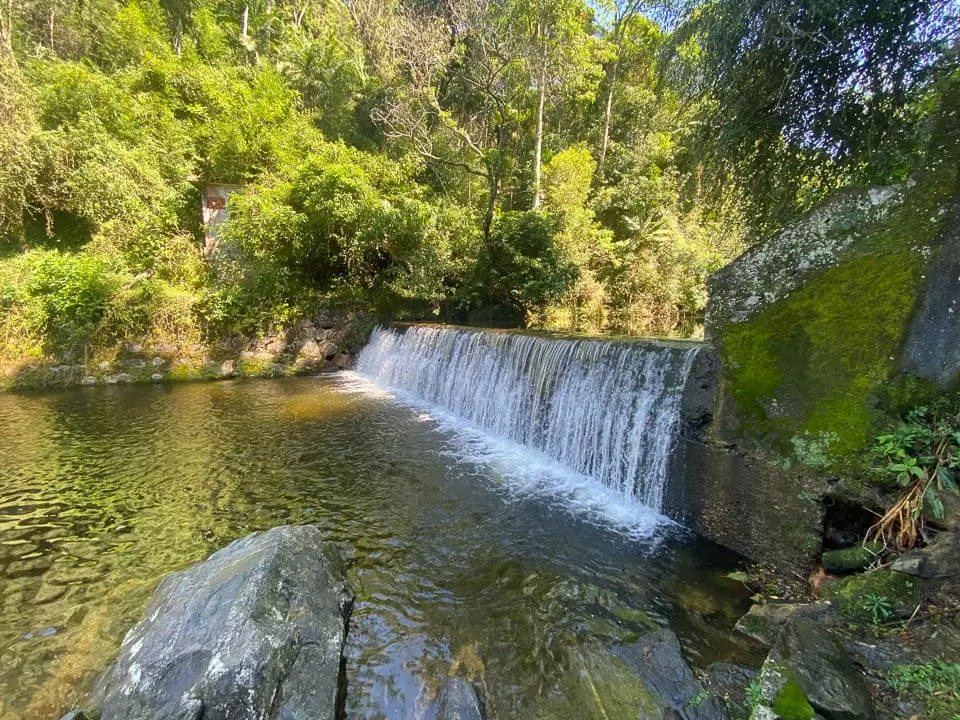
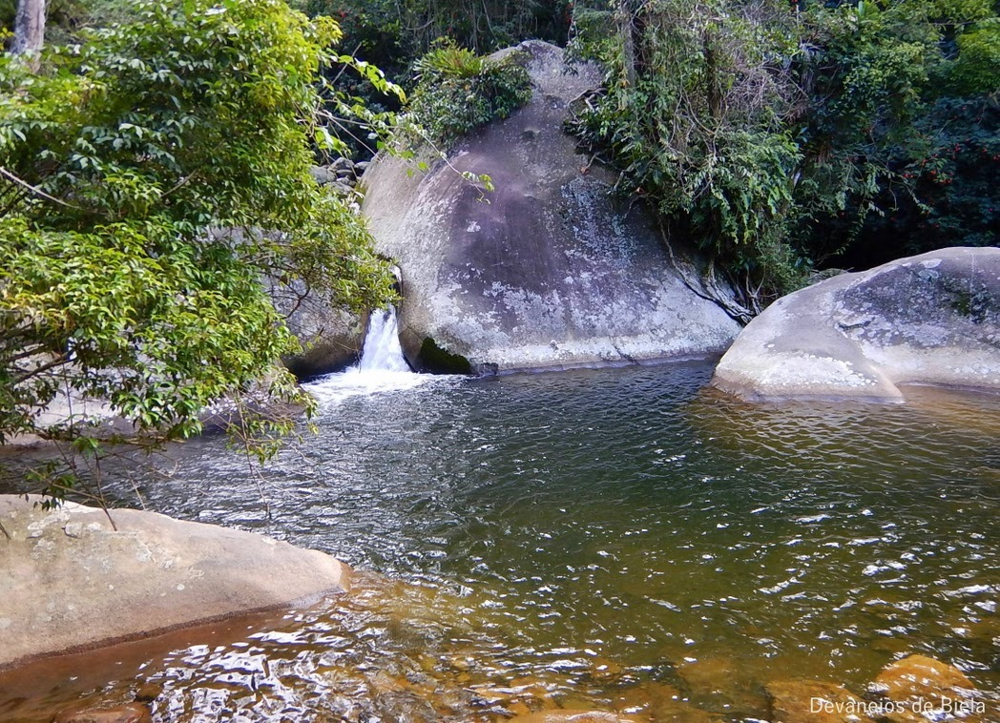

Cachoeiras Disponiveis
Cachoeira dos Frades



A Cachoeira dos Frades é um dos destinos naturais mais encantadores de Teresópolis, localizada em uma região cercada pela exuberante vegetação da Mata Atlântica. Sendo encontrada próxima da Cachoeira da campanha, sendo do Parque Estadual dos Três Picos Com suas quedas d’água em níveis e piscinas naturais de águas cristalinas, o local é ideal para quem busca tranquilidade, contato com a natureza e momentos de lazer ao ar livre. O acesso até a cachoeira envolve uma caminhada leve, com trechos bem definidos e rodeados por paisagens naturais deslumbrantes. Durante o percurso, é possível observar a fauna e flora locais, além de aproveitar o som relaxante da água corrente. A experiência é considerada de nível fácil, sendo indicada tanto para iniciantes quanto para visitantes que desejam um passeio mais tranquilo. Ao chegar, o visitante é recompensado com um cenário perfeito para banho, descanso e contemplação. As formações rochosas ao redor criam pequenas quedas e poços ideais para se refrescar, especialmente em dias mais quentes. A área também é bastante procurada por fotógrafos e amantes da natureza.
- Destaques e Aventura:
Dica EcoSerra: Não esqueça usar calçados adequadosde, levar água, protetor solar e, claro, recolher todo o seu lixo. Vamos preservar esse santuário!
Cachoeira da Campanha



A Cachoeira da Campanha é um dos refúgios naturais mais tranquilos e agradáveis de Teresópolis, ideal para quem busca contato direto com a natureza em um ambiente mais calmo e menos movimentado. Localizada no bairro Campanha, na zona rural do município, a cachoeira está inserida em uma área cercada pela vegetação típica da Mata Atlântica, proporcionando um cenário perfeito para descanso e lazer. O acesso ao local é relativamente fácil, com trechos de caminhada leve por trilhas naturais e áreas abertas. O percurso é cercado por árvores e acompanha o curso do rio, criando uma experiência agradável desde o início. A caminhada é considerada de nível fácil, sendo indicada para visitantes de todas as idades. Ao chegar, o visitante encontra um conjunto de pequenas quedas d’água e poços naturais com águas calmas, ideais para banho e relaxamento. As margens do rio formam áreas planas que permitem descanso, piqueniques e momentos de contemplação. A tranquilidade do ambiente, aliada ao som constante da água corrente, torna o local perfeito para quem deseja fugir da rotina e se reconectar com a natureza.
- Destaques e Curiosidades:
Dica EcoSerra: Não esqueça de levar água, protetor solar e, claro, recolher todo o seu lixo. Vamos preservar esse santuário!
Poço dois Irmãos



Localizado no interior do Parque Nacional da Serra dos Órgãos PARNASO, o Poço Dois Irmãos é uma das joias mais acessíveis e encantadoras da sede Teresópolis. Recebe este nome devido às duas grandes rochas idênticas que emolduram a queda d'água, criando uma piscina natural de águas gélidas e transparentes, ideais para um banho revigorante em meio à Mata Atlântica. A Experiência da Trilha: A caminhada até o poço é considerada de nível muito leve. O acesso é feito pela Estrada da Barragem, em um percurso praticamente plano e bem sombreado, o que a torna a escolha favorita para famílias com crianças e idosos. Durante o curto trajeto, é possível apreciar o som do Rio Paquequer e a densa vegetação que abriga diversas espécies de pássaros e pequenos primatas. O Cenário Perfeito: Diferente de outras quedas mais altas, o Poço Dois Irmãos destaca-se pela sua piscina natural tranquila. A profundidade é variada, permitindo tanto o mergulho quanto apenas o relaxamento à beira d'água. É o lugar ideal para quem busca paz, meditação ou um piquenique contemplativo cercado pelo verde vibrante da serra.
- Destaques e Curiosidades:
Dica EcoSerra: Não esqueça de levar água, protetor solar e, claro, recolher todo o seu lixo. Vamos preservar esse santuário!
Parque Nacional



O Parque Nacional da Serra dos Órgãos PARNASO é uma das unidades de conservação mais antigas e famosas do Brasil, sendo um verdadeiro santuário da biodiversidade de Teresópolis. Com mais de 20 mil hectares de área preservada, o parque é o destino definitivo para quem busca desde um dia relaxante em família nas suas famosas piscinas naturais até as travessias mais desafiadoras e cobiçadas das Américas. A Experiência no Parque: O setor sede de Teresópolis oferece uma infraestrutura completa para o visitante. A trilha principal que corta o parque é pavimentada em grande parte, permitindo um passeio de nível fácil que conecta diversas atrações. O clima é marcado pelo frescor da altitude e pela umidade da floresta preservada, criando um ambiente perfeito para fugir do calor e renovar as energias. O Paraíso das Águas: A grande estrela do setor baixo são as suas quedas e poços. Além do Poço Dois Irmãos, o visitante pode desfrutar do Piscinão Natural, uma grande área de banho com águas calmas e cristalinas, perfeita para todas as idades. O parque abriga inúmeras cachoeiras e cursos d'água que descem diretamente dos picos mais altos, garantindo uma das águas mais puras e refrescantes do estado.
- Destaques e Curiosidades:
Dica EcoSerra: Não esqueça de levar água, protetor solar e, claro, recolher todo o seu lixo. Vamos preservar esse santuário!